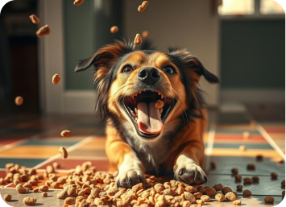
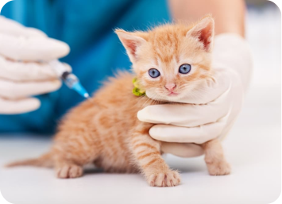
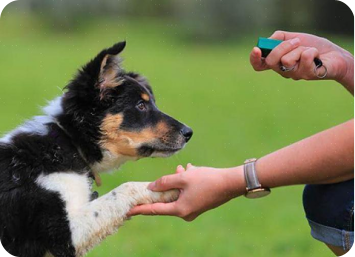
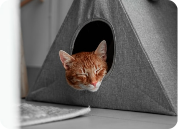
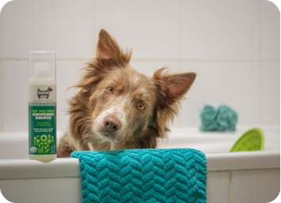
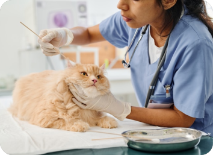

Cuidados e dicas
Cuidar de um animal vai muito além do afeto — é um gesto de responsabilidade, empatia e aprendizado constante. Nesta seção, você encontra dicas práticas para garantir o bem-estar do seu pet.
ALIMENTAÇÃO
Descubra como alimentar o seu pet da maneira adequada.
VACINAS
Descubra quais são as vacinas essenciais e quando aplicá-las.
COMPORTAMENTO
Descubra como lidar com os maus comportamentos do seu pet.
AMBIENTE SEGURO
Saiba como preparar a casa para evitar acidentes e garantir conforto ao seu companheiro.
HIGIENE
Descubra como manter o pet limpo e saudável com cuidados simples do dia a dia.
SAÚDE PREVENTIVA
Entenda a importância das consultas regulares e dos exames de rotina para o seu pet.
Blog Adote+
O Blog Adote+ é um espaço feito para quem acredita que cada ato de cuidado cria um impacto positivo. Aqui, você aprende, se emociona e se conecta com uma comunidade que compartilha o mesmo amor e respeito pelos animais.
“Quando um pet muda sua vida: histórias de adoção emocionantes”
“Por que os animais ajudam na saúde mental?”
“Como identificar maus-tratos e agir com segurança”
“ONGs que fazem a diferença: conheça projetos inspiradores”
“Como fortalecer o vínculo com seu novo pet nos primeiros dias de adoção”
“Como fortalecer o vínculo com seu novo pet nos primeiros dias de adoção”